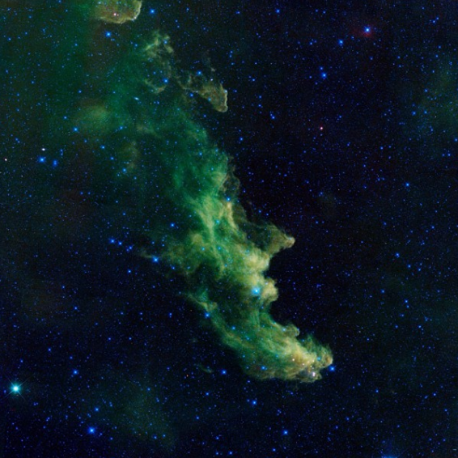
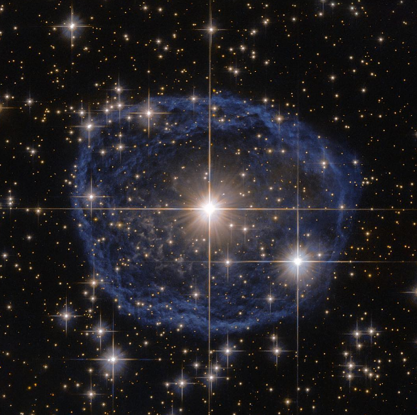

Thinkful Float Exercise
Nebulas
Are they really that nebulous?
A nebula (Latin for 'cloud' or 'fog'; pl. nebulae, nebulæ, or nebulas) is an interstellar cloud of dust, hydrogen, helium and other ionized gases. Originally, the term was used to describe any diffuse astronomical object, including galaxies beyond the Milky Way. The Andromeda Galaxy, for instance, was once referred to as the Andromeda Nebula (and spiral galaxies in general as "spiral nebulae") before the true nature of galaxies was confirmed in the early 20th century by Vesto Slipher, Edwin Hubble and others.  Most nebulae are of vast size; some are hundreds of light-years in diameter. A nebula that is barely visible to the human eye from Earth would appear larger, but no brighter, from close by. The Orion Nebula, the brightest nebula in the sky and occupying an area twice the diameter of the full Moon, can be viewed with the naked eye but was missed by early astronomers. Although denser than the space surrounding them, most nebulae are far less dense than any vacuum created on Earth – a nebular cloud the size of the Earth would have a total mass of only a few kilograms. Many nebulae are visible due to fluorescence caused by embedded hot stars, while others are so diffuse they can only be detected with long exposures and special filters. Some nebulae are variably illuminated by T Tauri variable stars. Nebulae are often star-forming regions, such as in the "Pillars of Creation" in the Eagle Nebula. In these regions the formations of gas, dust, and other materials "clump" together to form denser regions, which attract further matter, and eventually will become dense enough to form stars. The remaining material is then believed to form planets and other planetary system objects.
There are a variety of formation mechanisms for the different types of nebulae. Some nebulae form from gas that is already in the interstellar medium while others are produced by stars. Examples of the former case are giant molecular clouds, the coldest, densest phase of interstellar gas, which can form by the cooling and condensation of more diffuse gas. Examples of the latter case are planetary nebulae formed from material shed by a star in late stages of its stellar evolution.
Source: wikipedia
Return to Home